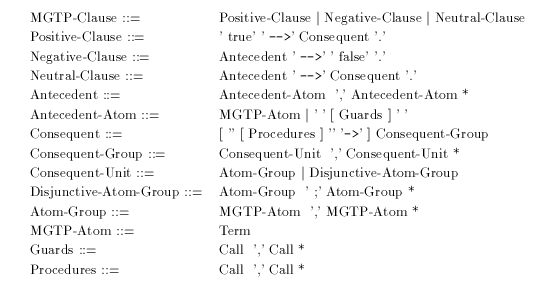

A1, ..., An, dom(X1), ..., dom(Xk) → B1; ...; Bm
で置き換える。ただし、
{X1,...,Xk} = ∪[j=1;m] var(Bj)\∪[i=1;n] var(Ai)
である。
{true → dom(K) | K ∈ consts(S)} ∪ {dom(X1),...,dom(Xn) → {dom(Fn(X1,..,Xn)) | Fn ∈ functs(S)}
を加える。
